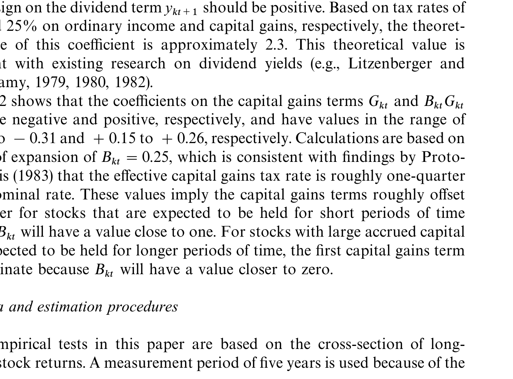
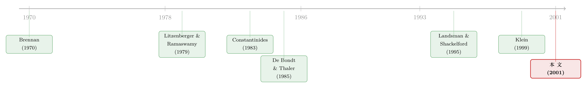

不是市场太激动，是股东舍不得交税——长期反转的一种「理性」解法
本文读的是 Klein (2001, Journal of Financial Economics)：过去表现好的股票，会给持有人累积下大笔「账面浮盈」；而卖出浮盈要交税，于是持有人惜售。为了出清市场，这些股票的均衡价格必须被顶得更高——价格越高，未来的预期收益就越低。于是「长期反转」并不是投资者非理性的过度反应，而是资本利得税的「锁仓效应」一手写出来的均衡现象。这个效应在横截面上确实存在，而且如模型预言的那样是非线性的，并且在控制了规模与过去总收益之后依然稳健。
1 一个被叫做「异象」的旧谜题
先把场景摆出来。
De Bondt and Thaler (1985) 有一个被引用了无数次的发现：过去几年里涨得最好的那批股票，接下来反而会跑输；而过去跌得最惨的那批，接下来反而会反弹。这就是所谓的长期反转 (long-horizon return reversal)。
这件事之所以让人不舒服，是因为它没法被当时的资产定价理论解释。于是人们退而求其次，给它贴了两类标签：一类说这是投资者的过度反应 (overreaction)，是行为偏差（Shefrin and Statman, 1985；Lakonishok et al., 1994）；另一类干脆说这是测量误差，是计算收益率时的偏差在作祟（Conrad and Kaul, 1993；Ball et al., 1995）。
无论哪一类，潜台词都是同一句：这是个 anomaly，是理论框架之外的东西。
本文要做的，恰恰是把这句话推翻。它说：别急着归因于人的非理性。一个由完全理性的投资者构成的市场，只要把一件再现实不过的事情写进模型——卖出赚钱的股票要交资本利得税——长期反转就会自己长出来。它不是模型的 bug，而是模型的均衡特征。
2 直觉：赢家为什么「贵得有道理」
在钻进数学之前，先把这篇文章的核心直觉讲透。后面所有的公式，都只是在给这一段直觉「上锁」。
设想一只过去涨得很好的股票。涨得好，意味着它的持有人手里攥着大笔累计资本利得 (accrued capital gain)。现在问题来了：如果一个投资者手里这只股票拿得「太多」、想减一点仓，他会怎么做？
答案是：他会比没有税的世界里卖得更少。因为一旦卖出，账面上的浮盈就要被立刻征税——惜售，是为了把这笔税往后拖。
可是反过来，对于那些手里这只股票拿得「太少」、想加仓的投资者呢？买入并不会触发任何资本利得税。所以他们没有对称的「惜买」动机。
于是市场出现了一个不平衡：卖方因为怕交税而缩手，买方却照常。要让市场重新出清，唯一的办法就是把价格顶高——价格更高，才能诱使那些被「锁」住的人多卖一点，同时让想买的人少买一点。
接着，一个自然的推论是：今天的价格被顶高了，明天的预期收益就被压低了。而且，只要资本利得还在继续累积、还没被实现，这个效应就会一期一期地延续下去。
这，就是长期反转。赢家之所以后续跑输，不是因为市场先前太激动，而是因为它们的价格里，永远多压着一块「舍不得交的税」。
这套故事和现实是对得上的。财经媒体里到处是投资者努力少实现资本利得、却又不得不为了再平衡而偶尔实现的报道；市场上还有一大类「税务优化型」共同基金，明确把「尽量不实现资本利得」写进策略。这些基金对那些根本不在乎浮盈的投资者毫无吸引力——这本身就说明，浮盈是真的在左右人的交易决策。
3 它在和谁吵架：Constantinides 的「永不实现」
这里必须停下来，交代一段学术上的张力，否则你不会明白这篇文章「关键的一步」在哪里。
Constantinides (1983) 有一个著名结论：投资者永远不应该主动实现资本利得。逻辑很漂亮：你可以「对箱做空 (short against the box)」——卖空同一只股票来锁定头寸而不触发纳税；或者卖掉一只免税的完美替代证券来再平衡。这样一来，每个投资者的组合风险就和他的累计浮盈彻底脱钩，于是均衡收益也完全不受浮盈影响。后来一批关注税收时机期权 (tax-timing option) 的文章——Constantinides (1984)、Dammon and Spatt (1996)——都站在这个结论之上。
本文没有去质疑这个结论本身。它质疑的是它的前提：长期、无成本地做空，以及免税的完美替代证券，真的存在吗？
作者的回答是：不存在，或者至少代价高昂。对箱做空要长期、永久地维持一个空头头寸来永久递延一笔浮盈，年复一年的持仓成本根本不能算「可忽略」；卖完美替代证券更尴尬——如果你不持有替代品，做空它的成本和做空原股票一样高；如果你已经持有它，那么按定义它过去的价格走势和原股票相似，你很可能在替代品上也有一笔浮盈，卖它来递延原股票的税，等于把税挪了个地方交，毫无意义。
于是「关键的一步」出现了：把 Constantinides 的理想化假设拿掉。Klein (1998a) 在单期均值/方差框架里证明，浮盈大的股票均衡收益更低；Klein (1999) 把它推广到多期，发现锁仓效应在多期里比单期大得多，而且会缓慢消散。本文（Klein, 2001）则把这套理论收敛到一个干净的多期定价模型，并第一次拿它去硬碰长期反转的横截面数据。
（顺带一提，资本利得税如何反过来影响投资者的实际交易，是个独立而有趣的话题，可参见《年底甩亏损，转身又买回：芬兰账本里那条「洗售」的暗线》；而个人税究竟能不能定价股票，则有一个来自伦敦 AIM 的干净实验，见《个人税，悄悄定价了你的股票》。）
4 模型：把「惜售」写成一个方程
现在进入正题。文中模型是离散时间——之所以用离散时间，是为了让模型能容纳一条很现实的规则：洗售规则 (wash sale rule) 要求一只股票的对冲性买卖之间至少隔一段时间（典型是 30 天）。为了简化，假设一个代表性投资者 (representative investor)，拥有时间可分的凹效用函数。
设定如下。投资者在 \(t\) 期初持有 \(K\) 只股票各 \(S_{kt-1}\) 股，以及无风险资产 \(S_{0t-1}\)。每只股票上都附着一笔异质的累计资本利得 \(G_{kt}\)。股利与利息按 \(\tau_d\) 征税，已实现的资本利得按 \(\tau_g\) 征税。无风险税后收益记为 \(R_t = 1 + r_{ft}(1-\tau_d)\)。
第一个要害的对象，是刻画「卖了多少」的向量 \(a_t\)。它的每个分量定义为：
$$a_{kt} = 0 + \big[\,1 - S_{kt}/S_{kt-1} \;\big|\; S_{kt-1} > S_{kt}\,\big]$$
读法是：只有当投资者真的卖了（\(S_{kt-1} > S_{kt}\)）时，\(a_{kt}\) 才为正，它度量的是这一期实现掉的累计利得的比例；如果买入或不动，\(a_{kt}=0\)。换句话说，\(a_{kt}\) 就是「这一期我兑现了多少浮盈」的开关。
浮盈本身则一期一期地滚动更新：
$$G_{kt+1} = G_{kt}(1 - a_{kt}) + (P_{kt+1} - P_{kt})\,S_{kt}$$
右边第一项是「上期还没被实现的那部分浮盈」\(G_{kt}(1-a_{kt})\)，第二项是「留下来那些股票因价格变动新累积的浮盈」。
预算约束把税显式地扣了出来：
$$c_t = W_t - S_{0t} - P_t\!\cdot\! S_t - G_t\!\cdot\! a_t\,\tau_g, \qquad W_t = S_{0t-1}R_t + \big(P_t + d_t(1-\tau_d)\big)\!\cdot\! S_{t-1}$$
注意最后一项 \(G_t\!\cdot\! a_t\,\tau_g\)——这正是「卖出浮盈要交的税」，它就是整篇文章的发动机。投资者求解的是标准的跨期问题：
$$\max\; E_0 \sum_{t=0}^{\infty} \rho^{t}\, U(c_t), \qquad 0 < \rho < 1$$
5 一阶条件，与那个叫「递延项」的尾巴
对某只股票 \(k\) 的持仓求一阶条件，得到本文的核心方程（论文 Eq. 2）：
$$P_{kt} = R_t^{-1}\,E\big[P_{kt+1} - (P_{kt+1}-P_{kt})B_{kt}\tau_g + d_{kt+1}(1-\tau_d) + d_{kt}\big] - R_t^{-1}\,\mathrm{Cov}\!\Big(\tfrac{-\rho\, U'(c_{t+1})}{U'(c_t)},\; P_{kt+1} - (P_{kt+1}-P_{kt})B_{kt}\tau_g + d_{kt+1}(1-\tau_d)\Big)$$
不要被它吓到。它的结构其实很「CAPM」：价格 = 未来收益的贴现期望，减去一个风险调整（协方差项）。方括号里的东西是「明天能拿到的」：明天的价格 \(P_{kt+1}\)，扣掉由价格变动带来的、终将缴纳的资本利得税 \((P_{kt+1}-P_{kt})B_{kt}\tau_g\)，加上税后股利 \(d_{kt+1}(1-\tau_d)\)。
真正新的东西，是方括号里那条多出来的尾巴 \(d_{kt}\)——作者把它叫做递延项 (deferral term)。它的完整形式是：
$$d_{kt} = \tau_g\Big[\,w_{kt}\,(R_{t+1}-B_{kt})\,G_{kt}/S_{kt-1} \;-\; (1-w_{kt})\,C_{kt}\,(G_{kt}S_{kt}/S_{kt-1}^2)\,\Big]$$
这里 \(w_{kt}\) 是一个开关：投资者在卖 \(k\) 时取 1，在买时取 0。为什么要分情况？因为资本利得只有在卖出时才被实现，所以一阶条件天然地对「你现在是买方还是卖方」敏感。这就引出了两种情形。
5.1 情形一：最低卖出价
当价格高到投资者愿意卖（\(w_{kt}=1\)）时，递延项化简为：
这个公式说，递延项取决于三样东西：名义资本利得税率 \(\tau_g\)、每股浮盈 \(G_{kt}/S_{kt-1}\)，以及一个时间因子 \((R_{t+1}-B_{kt})\)。其中 \(B_{kt}\) 被称作清算进度表 (liquidation schedule)，它度量「这批股票还要等多久才被卖掉」，是内生于模型的、介于 0 和 1 之间的数。
为什么 \(B_{kt}\) 这么关键？因为它决定了递延一笔税的好处有多大。作者给了一组极漂亮的数字（取浮盈 = 当前价格的 50%、\(\tau_g=0.25\)、\(R=1.05\)/年）：
- 如果下一期就卖（\(B_{kt}=1\)），时间因子只有 $1.05-1=0.05$，要卖出所需的价格仅比无浮盈时高 0.6%；
- 如果递延 2 年再全部卖出，时间因子升到 $1.05-1/1.05=0.098$，价格要高 1.2%；
- 递延 5 年，时间因子 $1.05-1/1.05^4=0.227$，价格要高 2.7%；
- 递延 10 年和 15 年（这与
King and Fullerton (1984)报告的实际递延期一致），效应分别达到股价的 4.8% 和 6.5%。
注意这条曲线的形状：随着预期持有期变长，\(B_{kt} \to 0\)，效应加速放大。这就是为什么本文反复强调，浮盈对价格的影响是非线性的——这一点稍后在实证里至关重要。
而 \(B_{kt}\) 本身又有一层巧妙的内生性：Klein (1998a, 1999) 证明，浮盈大的投资者会超配那只股票，且超配程度随浮盈单调上升；这意味着有浮盈的股票会被持有得更久，\(B_{kt}\) 随浮盈单调下降。Landsman and Shackelford (1995) 用 RJR Nabisco 杠杆收购的数据从实证上印证了这一点：浮盈小的投资者更愿意卖。于是浮盈通过两条路抬高卖出门槛——直接通过 \(G_{kt}/S_{kt-1}\)，间接通过压低 \(B_{kt}\)——两者同向叠加，使总效应无歧义地为正且非线性。
5.2 情形二：最高买入价，与一个可以忽略的「平均效应」
当价格低到投资者愿意买（\(w_{kt}=0\)）时，递延项变成：
$$d_{kt} = -\tau_g\, C_{kt}\,(G_{kt}S_{kt}/S_{kt-1}^2)$$
这个结果乍看反直觉：买入并不触发任何即时纳税，怎么也会有税收效应？ 作者称之为平均效应 (averaging effect)：多买的股份会改变将来卖出时的成本基，从而影响将来的锁仓效应。
不过作者很诚实：这个效应在经济上几乎可以忽略。其一，\(C_{kt}\) 只有在「买入后下一期立刻卖出」时才不为零；其二，它依赖于成本核算方法——平均成本法（如加拿大）下才有平均效应，而美国很多投资者必须用先进先出 (FIFO)，那样进一步买入根本不改变既有头寸的计税成本，平均效应不复存在。所以全文的重量，几乎都压在情形一上。
6 从一个价格到两个价格：均衡为什么被「顶高」
这里是模型最优雅的地方，也是把第 2 节那段直觉真正「锁死」的一步。
在通常的代表性投资者模型里，一阶条件给出唯一一个让投资者既不想买也不想卖的价格，它就是均衡价格。但本文的 Eq. 2 给出的是两个价格：情形一那个较高的价格，是投资者愿意卖出的最低价；情形二那个较低的价格，是投资者愿意买入的最高价。
关键就在这里：
- 如果这只股票上没有浮盈，递延项为零，情形一的价格恰好等于情形二的价格——两价合一，回到唯一均衡。
- 一旦有浮盈，两个价格分开，中间出现一段「投资者既不愿买也不愿卖」的区间。均衡价格必落在这段区间内，而区间的下界（情形二价格）正是无浮盈时本该有的均衡价。
于是结论自动浮现：浮盈把均衡价格从下界往上顶，顶高的最大幅度取决于递延项，也就是取决于浮盈的大小与清算进度表。价格被顶高，未来预期收益就被压低——长期反转，到此已经从模型里长了出来。
7 从价格到收益：一个「后税 CAPM」
在适当假设下，Eq. 2 可以整理成一个后税版本的 CAPM（论文 Eq. 3）：
$$E_t[r_{kt+1}] = r_{ft+1} + q_{gkt}\,\beta_k\big[E_t[r_{mt+1}] - r_{ft+1} - (E_t[y_{mt+1}] - r_{ft+1})q_{dmt} + d_{mt}\big] + (E_t[y_{kt+1}] - r_{ft+1})q_{dkt} - d_{kt}$$
其中 \(\beta_k = \mathrm{Cov}(r_{kt+1}, r_{mt+1})/\mathrm{Var}(r_{mt+1})\) 是熟悉的系统性风险度量，\(y\) 表示股利收益率，下标 \(m\) 指市场组合。两个税收因子是：
$$q_{gkt} = \frac{1 - B_{mt}\tau_g}{1 - B_{kt}\tau_g}, \qquad q_{dkt} = \frac{\tau_d - B_{kt}\tau_g}{1 - B_{kt}\tau_g}$$
第一个因子 \(q_{gkt}\) 的分母是「1 减去股票 \(k\) 的有效资本利得税率」，而有效税率等于名义税率乘以个股特有的清算进度表 \(B_{kt}\tau_g\)；第二个因子 \(q_{dkt}\) 形如 Brennan (1970) 的税收项，区别在于把名义税率 \(\tau_g\) 换成了有效税率 \(B_{kt}\tau_g\)——这是本文相对经典后税 CAPM 的细微而重要的改动。
而真正承载全文核心假设的，是 Eq. 3 最末那一项 \(-d_{kt}\)。对有浮盈的股票，递延项 \(d_{kt}>0\)；它前面的负号就是这篇文章的中心命题：通过过去的好表现给投资者累积了浮盈的股票，预期收益更低。而且因为浮盈在被实现之前会一直累积，这个效应会持续超过一期。
8 识别策略：把递延项摆上回归台
理论讲完了，怎么检验？
把 Eq. 3 写成事后（ex post）形式，就得到一个可以直接套到横截面实现收益上的回归（论文 Eq. 4）：
$$r_{kt+1} = c_{0t} + c_{1t}\,\beta_k + c_{2t}\,y_{kt+1} + c_{3t}\,G_{kt} + c_{4t}\,B_{kt}G_{kt} + e_{kt}$$
这条回归的每一项都对应 Eq. 3 里的一块：截距对应 \(r_{ft+1}(1-q_{dkt})\)；\(\beta_k\) 的系数对应「市场超额收益 × 第一税收因子 \(q_{gkt}\)」；\(y_{kt+1}\) 的系数对应第二税收因子 \(q_{dkt}\)。而最关键的两项——\(G_{kt}\) 与 \(B_{kt}G_{kt}\)——正是递延项的泰勒展开的前两项。为什么要展开成两项？因为第 5.1 节说过，递延项是非线性的；用 \(G_{kt}\) 和它与清算进度表的交互项 \(B_{kt}G_{kt}\) 两个变量，才能把这条弯曲的关系捕捉住。
检验的逻辑很干脆：用 Fama and MacBeth (1973) 的横截面回归估出这些系数，看它们的符号是否与理论一致、是否显著异于零；若估出来的数值还接近理论在合理参数下隐含的取值，那就是更强的支持。为此作者先从 1936 到 1991 的美国税率史（论文 Table 1）出发，算出 Eq. 4 各系数在理论上应该长什么样——这张「理论符号与数值表」就是论文的 Table 2。

Table 2: provides theoretical signs and values of the coe$cients on the
理论的方向是清楚的：递延项随浮盈上升而上升、随清算进度表下降而上升，而它在收益方程里带负号；于是浮盈水平项 \(G_{kt}\) 的系数 \(c_3\) 应为负（浮盈越大、未来收益越低），而交互项 \(B_{kt}G_{kt}\) 的系数 \(c_4\) 应为正（部分抵消，正是非线性的来源）。
本文的核心实证结论，可以浓缩成三句话：第一，锁仓模型在横截面上被数据接受，系数带着理论预言的符号；第二，长期反转主要可归因于投资者的累计资本利得，而非单纯的过去总收益；第三，这个效应在形式上是非线性的，恰如模型所言，并且在把规模 (size) 与过去总收益一并加入回归后依然稳健。 换句话说，过去文献当作「行为异象」的那块反转利润，被这套纯理性的税收机制吃掉了相当大一部分。
9 文献脉络
把这条线索捋一遍，你会看到一个漂亮的「正—反—合」。
最早，Brennan (1970) 把个人税收引入资产定价，得到了带税收项的市场估值关系；Litzenberger and Ramaswamy (1979) 沿着这条路研究个人税与股利如何影响资产价格。这是「税收会进价格」的奠基。
接着是「反题」：Constantinides (1983) 用一组理想化假设证明，理性投资者永不实现资本利得，于是浮盈与均衡收益脱钩——这等于在说，前面那条线索在资本利得这个维度上是失效的。与此同时，De Bondt and Thaler (1985) 在另一条赛道上发现了长期反转，并被普遍解读为行为异象。两条线在很长时间里各说各话。

然后是「合题」。Landsman and Shackelford (1995) 用 RJR Nabisco 的微观数据证明浮盈确实在左右人的卖出意愿，给 Constantinides 的假设撬开了一道缝。Klein (1998a, 1999) 顺势拿掉那些理想化假设，把锁仓效应重新请回均衡定价。本文（Klein, 2001）站在这个位置上，第一次把锁仓理论与 De Bondt–Thaler 的长期反转正面缝合：原来那个「异象」，可能一直是个税收现象。
10 评论与延伸（Q&A + 研究方向）
(a) 几个可能的疑问
Q：这套机制和「过度反应」到底怎么区分？两者都预言赢家后续跑输。
区别在横截面的形状与条件变量。过度反应预言反转主要由「过去涨跌幅度」驱动，且无所谓税收环境；本文预言反转由「累计资本利得 \(G_{kt}\)」驱动，且是非线性的（需要 \(B_{kt}G_{kt}\) 交互项），还应随资本利得税率高低而变化。本文的实证正是靠「控制过去总收益后、浮盈仍显著」来把两者掰开的。
Q：代表性投资者假设会不会把故事讲过头？现实里有大量免税账户（养老金、捐赠基金）根本不交资本利得税。
这是最实在的担忧。代表性投资者掩盖了「应税投资者 vs 免税投资者」的客户群结构。理论上，只要边际投资者是应税的，效应就在；但免税资金占比上升会稀释它。这恰恰是后续可做的异质性检验——模型本身（多投资者版本见
Klein, 1998a, 1999）是支持这种扩展的。
Q：为什么是「长期」反转，而不是短期？
因为机制依赖于浮盈的累积与缓慢消散。浮盈要靠过去若干年的持续上涨才能堆起来，而清算进度表 \(B_{kt}\) 又意味着它要很多年才被逐步实现。
Klein (1999)专门论证了这种持续性——效应是「缓慢消散」的，所以它天然作用在长期而非月度频率上。
Q：买入也有税收效应（平均效应），会不会把卖出那边的故事抵消掉？
基本不会。平均效应 \(-\tau_g C_{kt}(G_{kt}S_{kt}/S_{kt-1}^2)\) 只在「买入后立刻卖出」时才非零，且在美国 FIFO 计税下根本不存在。作者明确把它判为「经济上可忽略」，全文重量在情形一（卖出）。
Q：Table 2 给的是理论值，可税率是会变的，这会不会污染检验？
会，但这恰恰是识别力的来源而非噪声。因为各年税率不同，理论隐含的系数值在时序上是变动的；作者用 1936–1991 的税率史逐年算出理论值，再和 Fama–MacBeth 的逐年系数对照——税率的时序变动反而提供了一个额外的、模型自带的「过度识别」检验。
Q：这是否意味着长期反转完全不是行为现象？
不能这么读。本文的措辞是反转「主要可归因于」浮盈，是把一块本以为属于行为的利润重新解释为理性税收效应，而非宣称行为解释完全错误。两套机制在数据里并存、且可能此消彼长。
(b) 几个可能的研究问题与提案
1. 把锁仓效应搬进公司债市场。 【经济故事】债券同样有资本利得/利息的差别征税，且长期持有人（保险公司、养老金）占比高、惜售动机强。锁仓效应是否在公司债的横截面上压出一条「浮盈→低预期收益」的暗线？这与信用利差里那块说不清的「流动性/持有人结构」成分可能高度纠缠。 【可行性】中。需要 TRACE 成交 + Mergent FISD 发行信息 + 机构持仓（如保险公司 NAIC、13F 难覆盖债券），浮盈需用持有成本估算，识别上的难点是计税成本的测量误差。
2. 用税改作为外生冲击做事件研究。 【经济故事】1986、1997、2003 等几次美国资本利得税率变动，给「有效税率 \(B_{kt}\tau_g\)」打入了外生缺口。模型预言：税率下降应当削弱锁仓效应，使高浮盈股票的相对定价回落、后续反转减弱。 【可行性】高。用 CRSP/Compustat 即可构造高/低浮盈组合，以税改为断点做 DiD，是相对干净的识别。难点是把「浮盈」从「过去收益」中正交化出来，避免和动量混淆。
3. 边际投资者的「应税属性」横截面。 【经济故事】若边际投资者免税（高机构、高指数基金持股），锁仓效应应当消失。把个股按应税投资者占比分组，检验效应强度是否单调下降，可直接检验代表性投资者假设的边界。 【可行性】中。需要分解持股的税收属性（共同基金 vs 养老金 vs 散户），数据拼接繁琐但可行；这也能和「外资持有人」议题接上——外资的资本利得税待遇往往与本地投资者不同。
4. 锁仓效应与流动性的交互。 【经济故事】惜售意味着供给曲线变陡、换手率下降。高浮盈股票是否同时表现出更低的换手率与更高的 Amihud 非流动性？若是，则锁仓效应有一个可观测的「流动性指纹」，可与定价效应互为佐证。 【可行性】高。换手率、价差、Amihud 都是现成指标，与浮盈做横截面回归即可，难点仍是把因果方向（惜售→低流动性 vs 低流动性→惜售）讲清楚。
11 我的判断
先说贡献。这篇文章最漂亮的地方，不在实证有多花哨，而在它把一个被钉了二十年「异象」标签的现象，用一个完全理性的均衡机制重新讲了一遍，而且讲得自洽——从惜售直觉，到「两个价格」的均衡刻画，到非线性的递延项，再到一条可直接估计、且系数符号被理论唯一钉死的回归，环环相扣。「价格被顶高 → 未来收益被压低」这条链，逻辑上无懈可击。它和 Constantinides (1983) 的对话也极有教益：同一个数学结论，换一组更贴近现实的假设，结论可以整个翻过来。
再说担忧。其一，代表性投资者是这套优雅背后的代价——它把应税与免税投资者的客户群结构一笔抹平，而这恰恰是机制强弱的命门。其二，浮盈 \(G_{kt}\) 的测量在总量数据里只能靠历史价格推算「典型持有成本」，与过去收益、动量天然共线，要把锁仓效应从动量里干净地剥出来并不容易；本文「控制过去总收益后仍显著」的说法值得用更现代的工具复核（关于长期回归本身就容易「看见不存在的东西」，可参见《回归用得越「长」，越容易看见根本不存在的东西》）。其三，Fama–MacBeth 的标准误在高度持久的浮盈变量上可能被低估。
后续我最想看到的，是用税改做的外生检验：如果 1997 或 2003 的资本利得减税确实如模型所言削弱了高浮盈股票的相对溢价、压平了后续反转，那这套理论才算真正从「能拟合」走到了「能预测」。在那之前，它仍是一个极漂亮、但识别上略显单薄的均衡故事。
参考文献
- Brennan, M. J. (1970). Taxes, market valuation, and corporate financial policy. National Tax Journal 25, 417–427.
- Constantinides, G. M. (1983). Optimal stock trading with personal taxes. Econometrica 51, 611–636.
- Constantinides, G. M. (1984). Optimal stock trading with personal taxes. Journal of Financial Economics 13, 65–89.
- Dammon, R., & Spatt, C. (1996). The optimal trading and pricing of securities with asymmetric capital gains taxes and transaction costs. Review of Financial Studies 9, 921–952.
- De Bondt, W. F. M., & Thaler, R. (1985). Does the stock market overreact? Journal of Finance 40, 557–581.
- Fama, E. F., & French, K. R. (1992). The cross-section of expected stock returns. Journal of Finance 47, 427–465.
- Fama, E. F., & MacBeth, J. D. (1973). Risk, return and equilibrium: empirical tests. Journal of Political Economy 81, 607–636.
- King, M. A., & Fullerton, D. (1984). The Taxation of Income from Capital: A Comparative Study of the United States, the United Kingdom, Sweden and West Germany. University of Chicago Press / NBER.
- Klein, P. C. (1998a). The capital gain lock-in effect with short sales constraints. Journal of Banking and Finance 22, 1533–1558.
- Klein, P. C. (1999). The capital gain lock-in effect and equilibrium returns. Journal of Public Economics 71, 355–378.
- Klein, P. (2001). The capital gain lock-in effect and long-horizon return reversal. Journal of Financial Economics 59(1), 33–62.
- Lakonishok, J., Shleifer, A., & Vishny, R. W. (1994). Contrarian investment, extrapolation, and risk. Journal of Finance 49, 1541–1578.
- Landsman, W. R., & Shackelford, D. A. (1995). The lock-in effect of capital gains taxes: evidence from the RJR Nabisco leveraged buyout. National Tax Journal 48, 245–259.
- Litzenberger, R. H., & Ramaswamy, K. (1979). The effect of personal taxes and dividends on capital asset prices. Journal of Financial Economics 7, 163–195.
- Shefrin, H. M., & Statman, M. (1985). The disposition to ride winners too long and sell losers too soon: theory and evidence. Journal of Finance 41, 774–790.